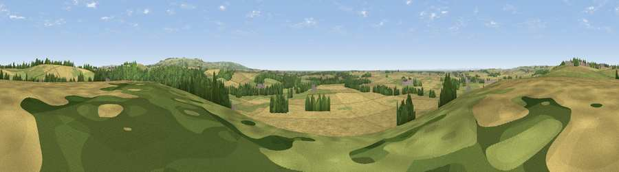

Viewpoint near Crambe
#18470 in England · top 38% of its area beats it · near CrambeThe view, rendered

A 360° render of this exact spot computed from the terrain model, tree cover and land cover — summer colours, afternoon light, calibrated against photographs of famous viewpoints. Real trees, hedges and buildings will differ in detail.
The panorama
Grey silhouette: terrain skyline in each direction (720 bearings, Earth curvature and refraction included). Dashed green: skyline with trees (+15 m) and buildings (+8 m) as obstacles. Blue strip: how far the ground is visible on each bearing.
Where the view opens
Wedge length = distance to the farthest visible ground on that bearing (vegetation-aware). Rings at 10, 25 and 50 km.
What fills the view
59% cropland · 27% grassland · 13% woodland ·
Angular shares of the visible panorama (visual magnitude), not map area. Landscape diversity 0.42 (0–1 Shannon).
Key numbers
More beautiful places nearby
The staircase of upgrades: each row has a higher view potential than everything closer. Driving times are estimates from straight-line distance, calibrated against real road routing — check an actual route before setting out.
| Place | Direction | Drive | Score |
|---|---|---|---|
| Viewpoint near Whitwell on-the-Hill | NNW · 1 km | ~3 min | 58.6 |
| Viewpoint near Whitwell on-the-Hill | NNW · 1 km | ~4 min | 59.0 |
| Viewpoint near Bulmer | NW · 4 km | ~9 min | 60.8 |
| Viewpoint near Acklam | SE · 7 km | ~14 min | 68.5 |
| Viewpoint near Leavening | ESE · 7 km | ~14 min | 73.7 |
| Viewpoint near Acklam | ESE · 8 km | ~16 min | 73.8 |
| Viewpoint near Ampleforth | NW · 20 km | ~34 min | 76.6 |
| Viewpoint near Kilburn | NW · 28 km | ~44 min | 79.3 |
54.06926, -0.88714 · source: screening · position refined by local search. Computed location — check access rights before visiting.